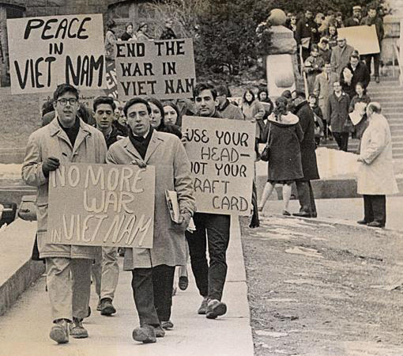
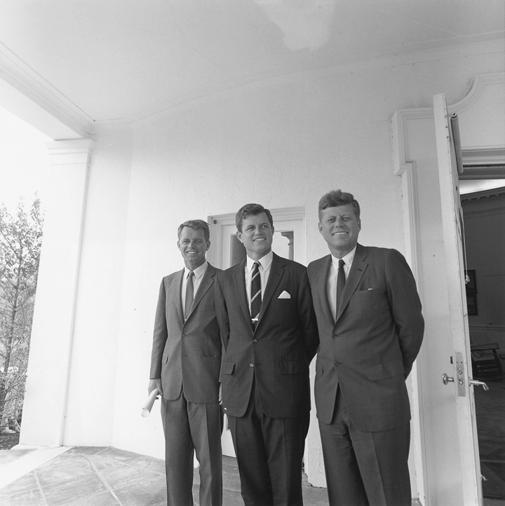
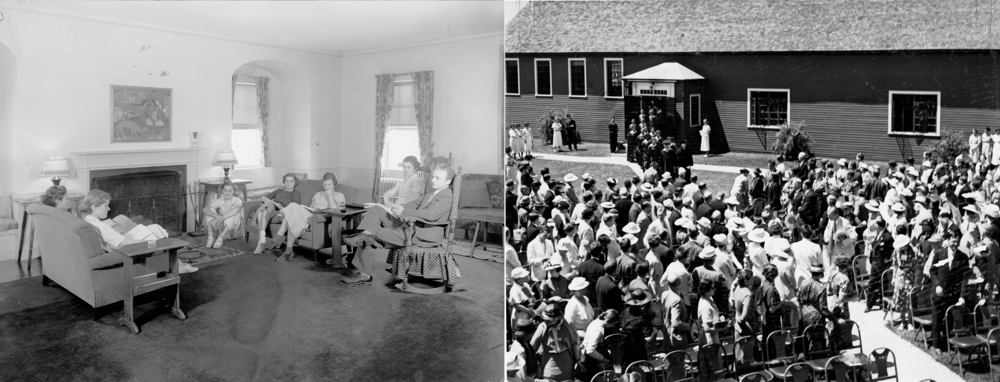

After reading this section, you should be able to answer the following questions:
This section will define what is meant by political socialization and detail how the process of political socialization occurs in the United States. It will outline the stages of political learning across an individual’s life course. The agents that are responsible for political socialization, such as the family and the media, and the types of information and orientations they convey will be discussed. Group differences in political socialization will be examined. Finally, the section will address the ways that political generations develop through the political socialization process.
People are inducted into the political culture of their nation through the political socialization process.Fred I. Greenstein, Children and Politics (New Haven, CT: Yale University Press, 1969). Most often older members of society teach younger members the rules and norms of political life. However, young people can and do actively promote their own political learning, and they can influence adults’ political behavior as well.Michael McDevitt and Steven Chaffee, “From Top-Down to Trickle-Up Influence: Revisiting the Assumptions about the Family in Political Socialization,” Political Communication, November 2002, 281–301.
Political scientists Gabriel Almond and James Coleman once observed that we “do not inherit our political behavior, attitudes, values, and knowledge through our genes.”Gabriel A. Almond and James S. Coleman, eds., The Politics of the Developing Areas (Princeton, NJ: Princeton University Press, 1960), 27. Instead, we come to understand our role and to “fit in” to our political culture through the political learning process.Pamela Johnston Conover, “Political Socialization: Where’s the Politics?” in Political Science: Looking to the Future, Volume III, Political Behavior, ed. William Crotty (Evanston, IL: Northwestern University Press, 1991), 125–152. Political learningActive and passive, formal and informal ways in which people mature politically. is a broad concept that encompasses both the active and passive and the formal and informal ways in which people mature politically.Carole L. Hahn, Becoming Political (Albany: State University of New York Press, 1998). Individuals develop a political selfSense of personal identification with the political world, which includes belonging to a community and knowledge of the shared beliefs and values of the members of that community., a sense of personal identification with the political world. Developing a political self begins when children start to feel that they are part of a political community. They acquire the knowledge, beliefs, and values that help them comprehend government and politics.Richard E. Dawson and Kenneth Prewitt, Political Socialization (Boston: Little Brown and Company, 1969). The sense of being an American, which includes feeling that one belongs to a unique nation in which people share a belief in democratic ideals, is conveyed through the political learning process.
Political socializationProcess through which people develop the attitudes, values, beliefs, and opinions conducive to becoming good citizens in their country. is a particular type of political learning whereby people develop the attitudes, values, beliefs, opinions, and behaviors that are conducive to becoming good citizens in their country. Socialization is largely a one-way process through which young people gain an understanding of the political world through their interaction with adults and the media. The process is represented by the following model:Fred I. Greenstein, Children and Politics (New Haven, CT: Yale University Press, 1969).
who (subjects) → learns what (political values, beliefs, attitudes, behaviors) → from whom (agents) → under what circumstances → with what effects.Agents of socializationIndividuals and institutions, including family, school, peer group, and mass media, responsible for imparting political orientations through the socialization process., which include parents, teachers, and the mass media, convey orientations to subjects, who are mostly passive. For example, parents who take an active role in politics and vote in every election often influence their children to do the same. Young people who see television coverage of their peers volunteering in the community may take cues from these depictions and engage in community service themselves. The circumstances under which political socialization can take place are almost limitless. Young people can be socialized to politics through dinner conversations with family members, watching television and movies, participating in a Facebook group, or texting with friends. The effects of these experiences are highly variable, as people can accept, reject, or ignore political messages.
People develop attitudes toward the political system through the socialization process. Political legitimacyHaving faith in the integrity of the political system and processes. is a belief in the integrity of the political system and processes, such as elections. People who believe strongly in the legitimacy of the political system have confidence that political institutions will be responsive to the wants and needs of citizens and that abuses of governmental power will be held in check. If political leaders engage in questionable behavior, there are mechanisms to hold them accountable. The presidential impeachment process and congressional ethics hearings are two such mechanisms.
Political efficacyIndividuals’ feeling that they can or cannot personally influence government and politics. refers to individuals’ perceptions about whether or not they can influence the political process. People who have a strong sense of political efficacy feel that they have the skills and resources to participate effectively in politics and that the government will be responsive to their efforts. Those who believe in the legitimacy of the political system and are highly efficacious are more likely to participate in politics and to take strong stands on public-policy issues.Stephen C. Craig, Malevolent Leaders (Boulder, CO: Westview, 1993). Citizens who were frustrated about the poor state of the economy and who felt they could influence the political process identified with the Tea Party in the 2010 election and worked to elect candidates who promised to deal with their concerns.
Much political socialization in the United States passes on norms, customs, beliefs, and values supportive of democracy from one generation to the next. Americans are taught to respect the democratic and capitalist values imbedded in the American creed. Young people are socialized to respect authorities, such as parents, teachers, police officers, and fire fighters, and to obey laws.
The goal of this type of socialization is deliberately intended to ensure that the democratic political system survives even in times of political stress, such as economic crisis or war.Jack Dennis, David Easton, and Sylvia Easton, Children in the Political System (New York: McGraw-Hill, 1969). One indicator of a stable political system is that elections take place regularly following established procedures and that people recognize the outcomes as legitimate.Jack Dennis, David Easton, and Sylvia Easton, Children in the Political System (New York: McGraw-Hill, 1969). Most Americans quickly accepted George W. Bush as president when the 2000 election deadlock ended with the Supreme Court decision that stopped the recounting of disputed votes in Florida. The country did not experience violent protests after the decision was announced, but instead moved on with politics as usual.Pamela Johnston Conover, “Political Socialization: Where’s the Politics?” in Political Science: Looking to the Future, Volume III, Political Behavior, ed. William Crotty (Evanston, IL: Northwestern University Press, 1991), 125–152.
2000 Presidential Election Bush vs. Gore
(click to see video)This citizen-produced video shows peaceful protestors outside of the Supreme Court as the case of Bush v. Gore was being considered to decide the outcome of the 2000 presidential election.
Some scholars argue that political socialization is akin to indoctrinationProcess of instructing people to conform to particular doctrines, principles, and ideologies., as it forces people to conform to the status quo and inhibits freedom and creativity.Charles E. Lindblom, “Another Sate of Mind,” in Discipline and History, ed. James Farr and Raymond Seidelman (Ann Arbor: University of Michigan Press, 1993), 327–43. However, socialization is not always aimed at supporting democratic political orientations or institutions. Some groups socialize their members to values and attitudes that are wildly at odds with the status quo. The Latin Kings, one of the largest and oldest street gangs in the United States, has its own constitution and formal governing structure. Leaders socialize members to follow gang rules that emphasize an “all for one” mentality; this includes strict internal discipline that calls for physical assault against or death to members who violate the rules. It also calls for violent retribution against rival gang members for actions such as trafficking drugs in the Kings’s territory. The Kings have their own sign language, symbols (a five-point crown and tear drop), colors (black and gold), and holidays (January 6, “King’s Holy Day”) that bond members to the gang.Felix Padilla, The Gang as American Enterprise (New Brunswick, NJ: Rutgers University Press, 1992).
Political learning begins early in childhood and continues over a person’s lifetime. The development of a political self begins when children realize that they belong to a particular town and eventually that they are Americans. Awareness of politics as a distinct realm of experience begins to develop in the preschool years.Jack Dennis, David Easton, and Sylvia Easton, Children in the Political System (New York: McGraw-Hill, 1969).
Younger children tend to personalize government. The first political objects recognized by children are the president of the United States and the police officer. Children tend to idealize political figures, although young people today have a less positive view of political actors than in the past. This trend is partially a result of the media’s preoccupations with personal scandals surrounding politicians.
Young people often have warm feelings toward the political system. Children can develop patriotic values through school rituals, such as singing the “Star Spangled Banner” at the start of each day. As children mature, they become increasingly sophisticated in their perceptions about their place in the political world and their potential for involvement: they learn to relate abstract concepts that they read about in textbooks like this one to real-world actions, and they start to associate the requirements of democracy and majority rule with the need to vote when they reach the age of twenty-one.
People are the most politically impressionable during the period from their midteens through their midtwenties, when their views are not set and they are open to new experiences. College allows students to encounter people with diverse views and provides opportunities for political engagement.Richard G. Niemi and Mary A. Hepburn, “The Rebirth of Political Socialization,” Perspectives on Political Science, 24 (1995): 7–16. Young people may join a cause because it hits close to home. After the media publicized the case of a student who committed suicide after his roommate allegedly posted highly personal videos of him on the Internet, students around the country became involved in antibullying initiatives.Virginia Sapiro, The Political Integration of Women (Urbana: University of Illinois Press, 1983).
Significant events in adults’ lives can radically alter their political perspectives, especially as they take on new roles, such as worker, spouse, parent, homeowner, and retiree.Janie S. Steckenrider and Neal E. Cutler, “Aging and Adult Political Socialization,” in Political Learning in Adulthood, ed. Roberta S. Sigel (Chicago: University of Chicago Press, 1988), 56–88. This type of transition is illustrated by 1960s student protestors against the Vietnam War. Protestors held views different from their peers; they were less trusting of government officials but more efficacious in that they believed they could change the political system. However, the political views of some of the most strident activists changed after they entered the job market and started families. Some became government officials, lawyers, and business executives—the very types of people they had opposed when they were younger.Paul Lyons, Class of ‘66 (Philadelphia: Temple University Press, 1994).
Figure 6.8
Student activists in the 1960s protested against US involvement in the Vietnam War. Some activists developed more favorable attitudes toward government as they matured, had families, and became homeowners.
Source: Photo courtesy of UW Digital Collectionshttp://commons.wikimedia.org/wiki/File:Student_Vietnam_War_protesters.JPG.
Even people who have been politically inactive their entire lives can become motivated to participate as senior citizens. They may find themselves in need of health care and other benefits, and they have more time for involvement. Organizations such as the Gray Panthers provide a pathway for senior citizens to get involved in politics.Anne Daugherty Miles, “A Multidimensional Approach to Distinguishing between the Most and Least Politically Engaged Senior Citizens, Using Socialization and Participation Variables” (PhD diss., Georgetown University, 1997).
People develop their political values, beliefs, and orientations through interactions with agents of socialization. Agents include parents, teachers, friends, coworkers, military colleagues, church associates, club members, sports-team competitors, and media.Richard E. Dawson and Kenneth Prewitt, Political Socialization (Boston: Little, Brown, 1969). The political socialization process in the United States is mostly haphazard, informal, and random. There is no standard set of practices for parents or teachers to follow when passing on the rites of politics to future generations. Instead, vague ideals—such as the textbook concept of the “model citizen,” who keeps politically informed, votes, and obeys the law—serve as unofficial guides for socializing agencies.Kenneth P. Langton, Political Socialization (New York: Oxford, 1969); Michael P. Riccards, The Making of American Citizenry (New York: Chandler Press, 1973).
Agents can convey knowledge and understanding of the political world and explain how it works. They can influence people’s attitudes about political actors and institutions. They also can show people how to get involved in politics and community work. No single agent is responsible for an individual’s entire political learning experience. That experience is the culmination of interactions with a variety of agents. Parents and teachers may work together to encourage students to take part in service learning projects. Agents also may come into conflict and provide vastly different messages.
We focus here on four agents that are important to the socialization process—the family, the school, the peer group, and the media. There are reasons why each of these agents is considered influential for political socialization; there are also factors that limit their effectiveness.
Over forty years ago, pioneering political-socialization researcher Herbert Hyman proclaimed that “foremost among agencies of socialization into politics is the family.”Herbert Hyman, Political Socialization (Glencoe, IL: Free Press, 1959), 69. Hyman had good reason for making this assumption. The family has the primary responsibility for nurturing individuals and meeting basic needs, such as food and shelter, during their formative years. A hierarchical power structure exists within many families that stresses parental authority and obedience to the rules that parents establish. The strong emotional relationships that exist between family members may compel children to adopt behaviors and attitudes that will please their parents or, conversely, to rebel against them.
Parents can teach their children about government institutions, political leaders, and current issues, but this rarely happens. They can influence the development of political values and ideas, such as respect for political symbols or belief in a particular cause. The family as an agent of political socialization is most successful in passing on basic political identities, especially an affiliation with the Republican or Democratic Parties and liberal or conservative ideological leanings.Jack Dennis and Diana Owen, “The Partisanship Puzzle: Identification and Attitudes of Generation X,” in After the Boom, ed. Stephen C. Craig and Stephen Earl Bennet (Lanham, MD: Rowman & Littlefield, 1997), 43–62.
Children can learn by example when parents act as role models. Young people who observe their parents reading the newspaper and following political news on television may adopt the habit of keeping informed. Adolescents who accompany parents when they attend public meetings, circulate petitions, or engage in other political activities stand a better chance of becoming politically engaged adults.Richard M. Merelman, Making Something of Ourselves (Berkeley: University of California Press, 1986). Children can sometimes socialize their parents to become active in politics; participants in the Kids Voting USA program have encouraged their parents to discuss campaign issues and take them to the polls on Election Day.
The home environment can either support or discourage young people’s involvement in political affairs. Children whose parents discuss politics frequently and encourage the expression of strong opinions, even if it means challenging others, are likely to become politically active adults. Young people raised in this type of family will often initiate political discussion and encourage parents to become involved. Alternatively, young people from homes where political conversations are rare, and airing controversial viewpoints is discouraged, tend to abstain from politics as adults.M. N. Saphir and Steven H. Chaffee, “Adolescents’ Contribution to Family Communication Patterns,” Human Communication Research 28, no. 1 (2002): 86–108. Politics was a central focus of family life for the Kennedys, a family that has produced generations of activists, including President John F. Kennedy and Senator Ted Kennedy.
Figure 6.9
Members of the Kennedy family have been prominently involved in politics for over a century, illustrating how the desire to participate in politics is passed on generationally.
There are limitations on the effectiveness of the family as an agent of political learning and socialization. Most families are not like the Kennedys. For many families, politics is not a priority, as they are more concerned with issues related to day-to-day life. Few parents serve as political role models for their children. Many activities, such as voting or attending town meetings, take place outside of the home.Richard M. Merelman, “The Family and Political Socialization: Toward a Theory of Exchange,” Journal of Politics, 42:461–86.
Some scholars consider the school, rather than the family, to be the most influential agent of political socialization.Robert Hess and Judith Torney, The Development of Political Attitudes in Children (Chicago: Aldine, 1967). Schools can stimulate political learning through formal classroom instruction via civics and history classes, the enactment of ceremonies and rituals such as the flag salute, and extracurricular activities such as student government. Respect for authorities is emphasized, as teachers have the ability to reward and punish students through grades.
The most important task of schools as agents of political socialization is the passing on of knowledge about the fundamentals of American government, such as constitutional principles and their implications for citizens’ engagement in politics. Students who master these fundamentals feel competent to participate politically. They are likely to develop the habit of following politics in the media and to become active in community affairs.Norman H. Nie, Jane Junn, and Kenneth Stehlik-Barry, Education and Democratic Citizenship in America (Chicago: University of Chicago Press, 1996).
The college classroom can be an environment for socializing young people to politics. Faculty and student exchanges can form, reinforce, or change evaluations of politics and government. A famous study of women students who attended Bennington CollegeLongitudinal study of women who attended Bennington College during the Great Depression of the 1930s and were politically socialized by their teachers and student colleagues. during the Great Depression of the 1930s illustrates how the college experience can create long-lasting political attitudes. The Bennington women came predominantly from wealthy families with conservative values. The faculty consisted of political progressives who supported the New Deal and other social programs. About one-third of the Bennington women adopted the progressive ideals of their teachers. Many of these women remained active in politics their entire lives. A number became leaders of the women’s rights movement.Duane F. Alwin, Ronald L. Cohen, and Theodore M. Newcomb, Political Attitudes Over the Life Span (Madison: University of Wisconsin Press, 1991).
Figure 6.10
Women at Bennington College in the 1930s became active in community affairs as a result of their political socialization in college.
Source: Courtesy of Bennington College. Left photo by C.G. Scofield. Right photo by Rotzel.
While schools have great potential as agents of political socialization, they are not always successful in teaching even basic facts about government to students. Schools devote far less time to civics and history than to other subjects that are considered to be basic skills, such as reading and math. The average amount of classroom time spent on civics-related topics is less than forty-five minutes per week nationwide, although this figure varies widely based on the school. Students whose exposure to civics is exclusively through lectures and readings generally memorize facts about government for tests but do not remember them or make connections to real-world politics. The most effective civic education programs engage students in activities that prepare them for the real world of politics, such as mock elections and legislative hearings.Richard G. Niemi and Jane Junn, Civic Education (New Haven, CT: Yale University Press, 1998).
Peers (a group of people who are linked by common interests, equal social position, and similar age) can be influential in the political socialization process. Young people desire approval and are likely to adopt the attitudes, viewpoints, and behavior patterns of groups to which they belong. Unlike the family and school, which are structured hierarchically with adults exercising authority, the peer group provides a forum for youth to interact with people who are at similar levels of maturity. Peers provide role models for people who are trying to fit in or become popular in a social setting.Lawrence J. Walker, Karl H. Hennig, and Tobias Krettenauer, “Parent and Peer Contexts for Children’s Moral Reasoning Development,” Child Development 71, no. 4 (August 2000): 1033–48.
Peer-group influence begins when children reach school age and spend less time at home. Middle-childhood (elementary school) friendships are largely segregated by sex and age, as groups of boys and girls will engage in social activities such as eating together in the lunchroom or going to the mall. Such interactions reinforce sex-role distinctions, including those with political relevance, such as the perception that males are more suited to hold positions of authority. Peer relationships change later in childhood, adolescence, and young adulthood, when groups are more often based on athletic, social, academic, and job-related interests and abilities.Judith Rich Harris, “Where Is the Child’s Environment? A Group Socialization Theory of Development,” Psychological Review 102, no. 3 (1995): 458–89.
The pressure to conform to group norms can have a powerful impact on young people’s political development if group members are engaged in activities directly related to politics, such as student government or working on a candidate’s campaign. Young people even will change their political viewpoints to conform to those held by the most vocal members of their peer group rather than face being ostracized. Still, individuals often gravitate toward groups that hold beliefs and values similar to their own in order to minimize conflict and reinforce their personal views.Eric L. Dey, “Undergraduate Political Attitudes,” Journal of Higher Education, 68 (1997): 398–413. As in the case of families, the influence of peer groups is mitigated by the fact that politics is not a high priority for most of them.
As early as the 1930s, political scientist Charles Merriam observed that radio and film had tremendous power to educate: “Millions of persons are reached daily through these agencies, and are profoundly influenced by the material and interpretations presented in impressive form, incessantly, and in moments when they are open to suggestion.”Charles Edward Merriam, The Making of Citizens (Chicago: University of Chicago Press, 1931), 160–61. The capacity of mass media to socialize people to politics has grown massively as the number of media outlets has increased and as new technologies allow for more interactive media experiences. Most people’s political experiences occur vicariously through the media because they do not have personal access to government or politicians.
Since the advent of television, mass media have become prominent socialization agents. Young people’s exposure to mass media has increased markedly since the 1960s. Studies indicate that the typical American aged two to eighteen spends almost forty hours a week consuming mass media, which is roughly the equivalent of holding a full-time job. In one-third of homes, the television is on all day. Young people’s mass-media experiences often occur in isolation. They spend much of their time watching television, using a computer or cell phone, playing video games, or listening to music alone. Personal contact with family members, teachers, and friends has declined. More than 60 percent of people under the age of twenty have televisions in their bedrooms, which are multimedia sanctuaries.Kaiser Family Foundation, The Media Family (Menlo Park, CA: Kaiser Family Foundation, 2006).
The use of more personalized forms of media, such as text messaging and participation in social networking sites, has expanded exponentially in recent years. Young people using these forms of media have greater control over their own political socialization: they can choose to follow politics through a Facebook group that consists largely of close friends and associates with similar viewpoints, or they may decide to avoid political material altogether. Young people, even those who have not reached voting age, can become involved in election campaigns by using social media to contribute their own commentary and videos online.
Media are rich sources of information about government, politics, and current affairs. People learn about politics through news presented on television, in newspapers and magazines, on radio programs, on Internet websites, and through social media. The press provides insights into the workings of government by showcasing political leaders in action, such as gavel-to-gavel coverage of Congress on C-SPAN. People can witness politicians in action, including on the campaign trail, through videos posted on YouTube and on online news sites such as CNN and MSNBC. Entertainment media, including television comedies and dramas, music, film, and video games also contain much political content. Television programs such as The West Wing and Law and Order offer viewers accounts of how government functions that, although fictionalized, can appear realistic. Media also establish linkages between leaders, institutions, and citizens. In contrast to typing and mailing a letter, it is easier than ever for people to contact leaders directly using e-mail and Facebook.
Some factors work against the media as agents of political socialization. Media are first and foremost profit-driven entities that are not mandated to be civic educators; they balance their public service imperative against the desire to make money. Moreover, unlike teachers, journalists do not have formal training in how to educate citizens about government and politics; as a result, the news often can be more sensational than informative.
Political learning and socialization experiences can differ vastly for people depending on the groups with which they associate, such as those based on gender and racial and ethnic background. Certain groups are socialized to a more active role in politics, while others are marginalized. Wealthier people may have more resources for participating in politics, such as money and connections, than poorer people.
Figure 6.11

Secretary of State Hillary Clinton is one of an increasing number of women who has achieved a highly visible political leadership role.
There are significant differences in the way that males and females are socialized to politics. Historically, men have occupied a more central position in American political culture than women. This tradition was institutionalized at the time of the founding, when women did not receive the right to vote in the Constitution. While strides have been made over the past century to achieve political equality between the sexes, differences in sex-role socialization still exist. Traits associated with political leadership, such as being powerful and showing authority, are more often associated with males than females. Girls have fewer opportunities to observe women taking political action, especially as few females hold the highly visible positions, such as member of Congress and cabinet secretary, that are covered by mass media. This is starting to change as women such as Madeleine Albright and now Hillary Clinton attract media attention in their roles as secretary of state or as Nancy Pelosi did as Speaker of the House of Representatives. Sarah Palin gained national attention as Republican John McCain’s vice presidential running mate in 2008, and she has become a visible and outspoken political figure in her own right. Despite these developments, women are still are socialized to supporting political roles, such as volunteering in political campaigns, rather than leading roles, such as holding higher-level elected office. The result is that fewer women than men seek careers in public office beyond the local level.Virginia Sapiro, Women in American Society (New York: Mayfair Publishing, 2002).
A political generationGroup of individuals similar in age who share a general set of socialization experiences that leads to the development of shared political orientations that distinguish them from other age cohorts. is a group of individuals, similar in age, who share a general set of political socialization experiences leading to the development of shared political orientations that distinguish them from other age groups in society. People of a similar age tend to be exposed to shared historical, social, and political stimuli. A shared generational outlook develops when an age group experiences a decisive political event in its impressionable yearsPeriod from late adolescence to early adulthood when people begin to think more seriously about politics and can take part in meaningful ways, such as by voting.—the period from late adolescence to early adulthood when people approach or attain voting age—and begins to think more seriously about politics. At the same time, younger people have less clearly defined political beliefs, which makes them more likely to be influenced by key societal events.Michael X. Delli Carpini, Stability and Change in American Politics (New York: New York University Press, 1986).
The idea of American political generations dates back to the founding fathers. Thomas Jefferson believed that new generations would emerge in response to changing social and political conditions and that this would, in turn, influence public policy. Today people can be described as being part of the Depression Era/GI generation, the silent generation, the baby boom generation, generation X, and the millennial generation/generation Y. Depression Era/GIs, born between 1900 and 1924, were heavily influenced by World War I and the Great Depression. They tend to trust government to solve programs because they perceived that Franklin Delano Roosevelt’s New Deal programs helped the country recover from the Depression. The silent generation, born between 1922 and 1945, experienced World War II and the 1950s during their impressionable years. Like their predecessors, they believe that government can get things done, but they are less trusting of leaders. The Vietnam War and the civil rights and women’s rights movements left lasting impressions on the baby boomers, who were born between 1943 and 1960. The largest of the generations, this cohort protested against the government establishment in its youth and still distrusts government. Generation Xers, born between 1965 and 1980, came of age during a period without a major war or economic hardship. The seminal events they relate to are the explosion of the Challenger spacecraft and the Iran-Contra hearings. This generation developed a reputation for lacking both knowledge and interest in politics.William Strauss and Neil Howe, Generations (New York: William Morrow, 1992). The political development of the millennials, those born between 1981 and 2000, is influenced by the terrorist attacks of 9/11 and its aftermath, as well as by the rise of digital technologies. This generation is more multicultural and has more tolerance for racial and ethnic difference than older cohorts. Sociologists William Strauss and Neil Howe have identified an emerging cohort born after 2000, which they label the homeland generation. This generation is influenced by omnipresent technology, the war on terror, and parents who seek to protect them from societal ills.William Strauss and Neil Howe, Millennials Rising (New York: Random House, 2000).
Conflicts between generations have existed for centuries. Thomas Jefferson observed significant differences in the political worldviews of younger and older people in the early days of the republic. Younger government leaders were more willing to adapt to changing conditions and to experiment with new ideas than older officials.Daniel J. Elazar, The Generational Rhythm of American Politics (Philadelphia: Temple University, Center for the Study of Federalism, 1976). Today generation Xers and the millennials have been portrayed as self-interested and lacking social responsibility by their elders from the baby boom generation. Generational conflicts of different periods have been depicted in landmark films including the 1950s-era Rebel without a Cause and the 1960s-era Easy Rider. Generation X has been portrayed in films such as Slacker, The Breakfast Club, and Reality Bites. Movies about the millennial generation include Easy A and The Social Network.
Political socialization is the process by which people learn about their government and acquire the beliefs, attitudes, values, and behaviors associated with good citizenship. The political socialization process in the United States stresses the teaching of democratic and capitalist values. Agents, including parents, teachers, friends, coworkers, church associates, club members, sports teams, mass media, and popular culture, pass on political orientations.
Political socialization differs over the life course. Young children develop a basic sense of identification with a country. College students can form opinions based on their experiences working for a cause. Older people can become active because they see a need to influence public policy that will affect their lives. There are subgroup differences in political socialization. Certain groups, such citizens with higher levels of education and income, are socialized to take an active part in politics, while others are marginalized.
Political generations consist of individuals similar in age who develop a unique worldview as a result of living through particular political experiences. These key events include war and economic depression.